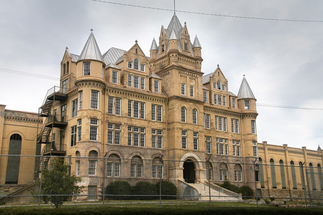

The Green Mile
Main Content

Another Stephen King prison drama from Frank Darabont, the director of The Shawshank Redemption, though it could hardly be more different.
‘Georgia Pines’ the nursing home in which aged Paul Edgecomb (Dabbs Greer) tells the story of his time as a warder on Death Row at ‘Cold Mountain Penitentiary’, is Flat Top Manor, a 20-room mansion built in 1901 for Moses Cone, a prosperous textile entrepreneur. It’s in the Moses Cone Memorial Park on the Blue Ridge Parkway at Blowing Rock, between Asheville and Winston-Salem, North Carolina. The Manor is now the home of the Parkway Craft Center, which features handmade crafts by regional artists.
The rest of the film was made in Tennessee. The prison itself, though supposedly in ‘Louisiana’, is the old Tennessee State Penitentiary, Cockrill Bend Boulevard in West Nashville, which closed in 1992. The penitentiary was previously seen in Bruce Beresford’s 1996 Last Dance, with Sharon Stone, and went on to appear in James Mangold’s Walk The Line, with Joaquin Phoenix as Johnny Cash. Due to the condition of the buildings, there’s no admission to the public.
The spot where John Coffey (Michael Clarke Duncan) is discovered with the bodies of the two little girls is by the Old Train Bridge across Caney Fork River, alongside I-40, about 50 miles east of Nashville, at Buffalo Valley.
30 miles south of Nashville, in the town of College Grove, you’ll find the church in which Edgecomb attends the funeral toward the end of the film, which is College Grove United Methodist Church, 8568 Horton Hwy.
It’s another 30 miles south to find the graveyard, which is Round Hill Cemetery, on Round Hill Road, just to the northeast of Belfast, near Lewisburg.
And I hate to be a killjoy but, no, there is no Mouseville in Tallahassee.
Visit Info
Visit The Film Locations
Tennessee
Visit: Tennessee
Visit: Nashville
Flights: Nashville International Airport, 1 Terminal Drive, Nashville, TN 37214 (tel: 615.275.1675)
North Carolina
Visit: North Carolina
Visit: the Blue Ridge Parkway
Visit: the Moses Cone Memorial Park, 667 Service Road, Blowing Rock, NC 28605 (tel: 828.295.7938)